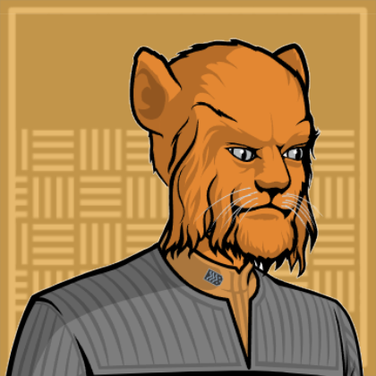

USS Hudson-B
Location:: The Shackleton Expanse
Portrait::
Note:: The NCC-7832-B: A exploration and diplomatic exchange ship set to explore the Shackleton Expanse.
Description
A Federation Galaxy Class starship commanded by Edward Scriba.
Traits
- Federation Starship
- Galaxy Class
- Survivor of Dominion War
Mission
The USS Hudson-B has been assigned to explore the Shackleton Expanse on the far side of the Klingon and Romulan empires. The Galaxy Class starship has been refit for service as an exploratory vessel after previously serving in the Dominion war. During the refit of the Hudson-B, the previously assumed lost USS Hudson-A reemerged from the Shackleton. Many members of the USS Hudson-A have been reassigned to the Hudson-B. The USS Hudson will be based out of Narendra Station, a deep space research station jointly run by Starfleet and the Klingon Empire.
Mission Logs
- Hudson Log 11 - Crystal Clear:
Stardate 56030, Session 14
The Hudson encountered a strange crystalline starship, and attempted to remove a torpedo from it, but ended up causes more damage. When they returned to Narendra Station, they found over 100 years had passed during their time at the black hole. Several members decide to either leave Starfleet or transfer to new positions. They rest of the long lost crew of the Hudson would continue their adventures in the Shackleton Expanse. - Hudson Log 12 - Pasqual's Progress:
Stardate 56052, Session 15
Captain Edward Scriba took several members of the new USS Hudson-B on a short survey mission aboard the Hudson's yacht. They visited Pasqual-1, and found the society there advancing rapidly though technological ages on their own. The people of Pasqual had embark on a century long project to go to space. An away team found a single neutronium obelisk left on the planet, which seemed to have some sort of influence on the people there. - Hudson Log 13.1 - Pasqual's Past:
Stardate 56073, Session 16
Admiral Hebert gave Captain Scriba permission to make first contact with the people of Pasqual-1. There, the Pasqualese were in a frenzy trying to learn as much about Starfleet technology as possible. But in their extended visit, Jaro found a dark secret buried beneath the repository: A borg queen. - Hudson Log 13.2 - The Proto-Borg:
Stardate 56091, Session 17
The crew of the Hudson learned that the org believed itself to be a creation of the Tilikaal. Thinking the Borg was too much of a threat, the crew killed the "Borg queen" and calledi n the Federation, who occupied the planet briefly to remove all possible borg and Tilikaal influence on the planet. - Hudson Log 14 - The Qofuari Conundrum:
Stardate 56107, Session 18
The Hudson responded to a distress call from a population of futurists on a planet where advanced technology was illegal to develop. After deliberating over the demands of the Prime Directive, the Hudson took many of the futurists aboard to bring back to Narendra Station - Hudson Log 15 - Fading Sun:
Stardate 56127, Session 19
The Hudson visited the starbase Epsilon 19, where energy parasites from a nearby star had caused several major explosions. The crew managed to restore power and capture or kill the parasites. An Orion woman named Helestia was arrested for stealing scientific equipment in the confusion. - Hudson Log 16.1 - Convoy SE-119:
Stardate 56168, Session 20
The Hudson and Klingon ship Mupwl' escorted a convoy to a new colony location in the Shackleton Expanse. Along the way, the Mupwl' was disabled by subspace eddies and the convoy attacked by pirated calling themselves "Vinshari" - Hudson Log 16.2 - Prisoner:
Stardate 56168, Session 21
The Hudson scared off the attack Vinshari pirates, and took aboard 1 surviving prisoner named MianNo-Ar. The Hudson learned about MianNo-Ar's bio-electric warp technology, a little bit of his people's political structure, and repaired his ship. They sent MianNo-Ar home on the repaired ship with a message of peace. - Hudson Log 17.1 - Decision Point:
Stardate 56185, Session 22
The USS Hudson responded to mysterious signals emanating from the Shackleton Expanse, tracing them to the Orgun system—where unstable tectonics were tearing a pre‑warp planet apart. An away team discovered malfunctioning Tilikaal terraformers deep underground that were causing the geological havoc, and managed to shut them down to buy precious additional time for evacuation. Though the immediate crisis was halted, the planet still faces long-term climate collapse and the natives must be relocated. - Hudson Log 17.2 - No Place Like Home:
Stardate 56185, Session 23
The USS Hudson coordinated the evacuation of Orgun III after halting a Tilikaal-induced planetary collapse, debating relocation options under the Prime Directive. The crew settled on a nearby Type K planet as a temporary refuge while engineering teams used Tilikaal technology to adjust Orgun III’s orbit and begin atmospheric repairs. The refugees now have a stable home until their planet becomes habitable again. - Hudson Log 18 - Life and Soul:
Stardate 56201, Session 24
- - Hudson Log 19 - New Life and New Civilizations:
Stardate 56265, Session 25
The USS Hudson discovered massive lifeforms called Ha’kiv being hunted by Vinshari ships as living energy sources and was forced to retreat after sustaining heavy damage in battle. Pursued by the Ar-Ka-Se, a Vinshari splinter group, the crew learned from Captain J’Lara and her Tilikaal science officer Thacinn that the Ha’kiv were being driven to extinction. Unable to assist directly, the Hudson offered technical support as J’Lara prepared to attempt the rescue on her own. - Hudson Log 20.1 - Signals:
Stardate 56282, Session 26
The USS Hudson investigated a subspace signal near the Seku system, where the crew crash-landed on an ocean planet and discovered a hidden crystalline city beneath the waves. Inside, they met survivors from several species and encountered a massive Tilikaal crystal generating an energy dome that held back the sea. - Hudson Log 20.2 - Atlantis:
Stardate 56282, Session 27
The Hudson’s away team continued exploring the underwater settlement on Seku IV and worked to modify a submersible shuttle for long-range communications. There, they further uncovered the mystery of who built this city and why. - Hudson Log 20.3 - City in the Sky:
Stardate 56282, Session 28
After Maui’s rescue, the team used the Cal-Mirran crystal on Seku-4 to raise the submerged city into the upper atmosphere, where the Hudson’s saucer section stabilized it in orbit. Meanwhile, Commander Jaro’s stardrive section rescued several Vinshari crews from a supernova zone but was forced to blind-warp away, vanishing without contact. - Hudson Log 21 - Reunions:
Stardate 56298, Session 29
The saucer and stardrive sections of the Hudson were finally reunited, and the crew began processing the fallout of Seku IV and the destruction of the Vinshari home system. The crew of the Hudson consoled the refugees and decided to keep them all on board until they returned to Narendra Station. - Hudson Log 22 - Candidate Three:
Stardate 56379, Session 30
In orbit of Candidate-3, the Hudson found the planet entirely covered in ancient alien ruins, possibly the origin world of Thaccin. The away team encountered a group of Akaru zealots investigating a strange pyramid and an alien hologram calling itself Assessor Tredik, but things quickly went sideways when half the team was captured and locked aboard the Akaru vessel. After a rescue attempt, the away team was nearly successful in taking the bridge, but were thwarted when the Akaru commander used override codes to lock them out.
Crew!
Department Heads
| "" + Role + ""4 | Rank + " " + file.link + "" | " (" + pronouns + ") - " + Species | "" + Type + "" | Portrait | " > " + Summary |
|---|---|---|---|---|---|
| Commanding Officer | Captain Edward Scriba | (he/him) - Human | Player Character | The Hudson is Scriba's first ship as the commanding officer. | |
| Chief Engineer | Commander Jaro Franklin | (he/him) - Bajoran | Player Character |  | Serving on a ship about as far away on you can get from Bajor |
| Science Officer | Lt Commander Jolepo | (he/him) - Edosian | Player Character | A xenobiologist with over a century of experience. | |
| Ship Doctor | Lieutenant T'Lor | (she/her) - Vulcan | Supporting Character |  | She believes in spiritual qualities to space exploration, and was formerly lovers with Jolepo. |
Command Division
| Role5 | Rank + " " + file.link + "" | "(" + pronouns + ") - " + Species | "" + Type + "" | Portrait | "> " + Summary |
|---|---|---|---|---|---|
| Commanding Officer | Captain Edward Scriba | (he/him) - Human | Player Character | The Hudson is Scriba's first ship as the commanding officer. | |
| Executive Officer | Commander Asha Vornar | (she/her) - Cardassian | Supporting Character |  | One of the first Cardassian Officers in Starfleet. |
| Steller Navigation | Lieutenant Maui | (he/him) - Cetacean | - | The Hudson has Cetacean Ops fully integrated into the ship, including parallel aquatic corridors and aquariums in most common working spaces. | |
| Navigator | Lieutenant JG Nisha | (she/her) - Orion | Supporting Character |  | Guilt ridden after failing to evacuate a planet before it got destroyed. |
| Communications Officer | Sublieutenant Cendek | (they / them) - Vulcan-Romulan | Supporting Character | Aboard the Hudson as part of an Exchange program with the Vulcans. |
Sciences Division
| Role5 | Rank + " " + file.link + "" | "(" + pronouns + ") - " + Species | "" + Type + "" | Portrait | "> " + Summary |
|---|---|---|---|---|---|
| Ship Counsellor | Lt Commander Valerie | (she/her) - Human | Supporting Character |  | Years spent living on a space station has prepared her as a ship counsellor for the Hudson's diverse crew. |
| Science Officer | Lt Commander Jolepo | (he/him) - Edosian | Player Character | A xenobiologist with over a century of experience. | |
| Ship Doctor | Lieutenant T'Lor | (she/her) - Vulcan | Supporting Character | | She believes in spiritual qualities to space exploration, and was formerly lovers with Jolepo. |
| Junior Science Officer | Lieutenant JG Tizia Sh'vollot | (she/her) - Andorian | Supporting Character |  | Become an astrophysicist to avoid the political life lead by her diplomat parents. |
| Parapsychology Specialist | Lieutenant JG Delisle | (they/them) - Betazed | Player Character | A doctor with specializations in “supernatural” phenomena in psychology. |
Operations Division
| Role4 | Rank + " " + file.link + "" | "(" + pronouns + ") - " + Species | "" + Type + "" | Portrait | "> " + Summary |
|---|---|---|---|---|---|
| Chief Engineer | Commander Jaro Franklin | (he/him) - Bajoran | Player Character | | Serving on a ship about as far away on you can get from Bajor |
| Security Officer | Lieutenant Tak | (they/them) - Saurian | Supporting Character | A frequent member of away missions that promise danger. | |
| Transport Chief | Senior Chief Petty Officer Fitz | (he/him) - Caitian | Supporting Character |  | Old, jaded, and sarcastic. But also a wealth of experience and a reliable crew member. |
| Security Specialist | Ensign Kyle Miller | (he/him) - Human | Supporting Character | A simple man from Indianapolis who constantly finds truth in Jolepo's wisdom. |
Passengers
| " " + file.link + ""5 | "(" + pronouns + ") - " + Species | "" + Type + "" | Portrait |
|---|---|---|---|
| Thaccin | (they/them) - Tilikaal | Non-Player Character | |
| Noralith | (she/her) - Akaru | Non-Player Character | |
| TyrosRi-Lo | (he/him) - Vinshari | Non-Player Character | |
| Therrisa | (she/her) - Akaru | Non-Player Character | |
| Captain J'Lara | (she/her) - Vinshari | Non-Player Character |
Locations
Facilities
| File0 | "> " + Note |
|---|
Shuttles
The Hudson is equipped with dozens of shuttles. Some notable ones are listed below!
| File2 | Portrait | "> " + Note |
|---|---|---|
| USS Aquafina | A submersible capable of short range warp with two decks. One deck is for humanoids and the bottom deck accommodates cetaceans. | |
| USS Portland | A captain's yacht docked on the underside of the USS Hudson-B |